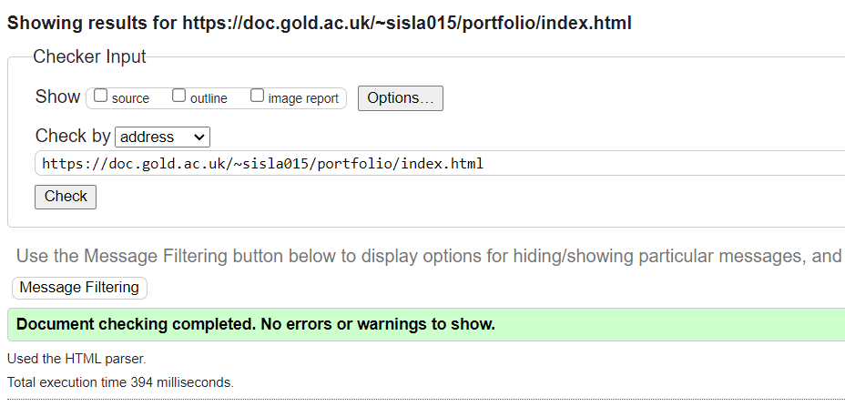
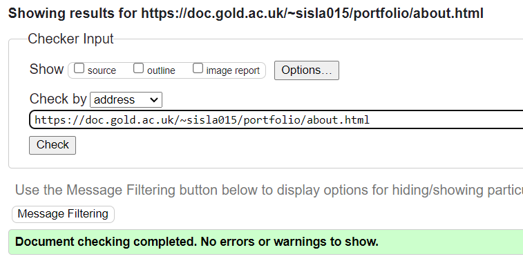
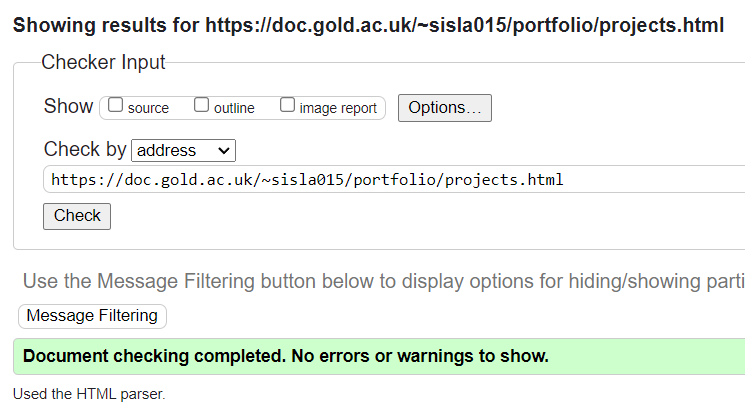

Introduction
I approached the subject by thinking about my future dreams and aspirations. I have a strong interest in Crypto and stocks, and technology related to it. As a result I believe in 10 years time my portfolio will consist of successful work related to those fields. The site would include my successful projects and applications.
Background
As stated earlier, my target audience would be people in crypto fields. Crypto is a very popular market right now and i believe in 10 years time it will be even greater in popularity, and therefore my portfolio would be relevant to crypto investors.
- Portfolio 1 (https://developerfolio.js.org)
- Portfolio 2 (https://www.jsmastery.pro)
- Portfolio 3 (https://portfolio-ideas.vercel.app)
Resource on portfolio creation
Planning
- I have ensured accessbility of my website by making the design of the website minimalistic and clean. It is easy on the eyes and includes a nice and simple colour scheme.
- I used a clear navigation menu on the top of my website that lists the main sections in my portfolio. The menu is easy to find and to use, and also stays on top of the page even while scrolling.
- I have included simple pictures where it is required, and the page is not crowded with too many images and is easy on the eye.
How have you made the site easy to navigate?
I have made the site easy to navigate with my navigation bar at the top. The navigation bar is consistent, as it is located at the same place (the top) of every page of the website so users can easy switch pages and can know which page they're on. I've also included a stylesheet that includes a line underneath of the page you're currently in on the navigation bar. The navigation bar also uses clear and simple labels.
Implementation
When making my website, I had to learn and research colour schemes. I wanted to keep my website aesthetically pleasing to the user, so I required a good colour scheme. However, I didn't have any knowledge of what makes a good colour scheme so i used this website called coolors.co, which generates a colour scheme for your website. I adjusted it accordingly and changed the colours up a bit to make it more visually pleasing.
Evaluation
What worked well
Three things that worked well in my portfolio is the navigation bar, colour scheme, and the css stylesheet in the background. They all work together to make an aesthetically pleasing website.
What might be improved
Three things I could have added is include a form in the contact me page where people can fill in with their own text and send rather than a simple mailto button. I could have also added more content in each pages. I could have also included the more modern dark and light theme at a press of a button which many portfolios have today, which make the website and space black or white depending on which mode.
References
Validator reports
  